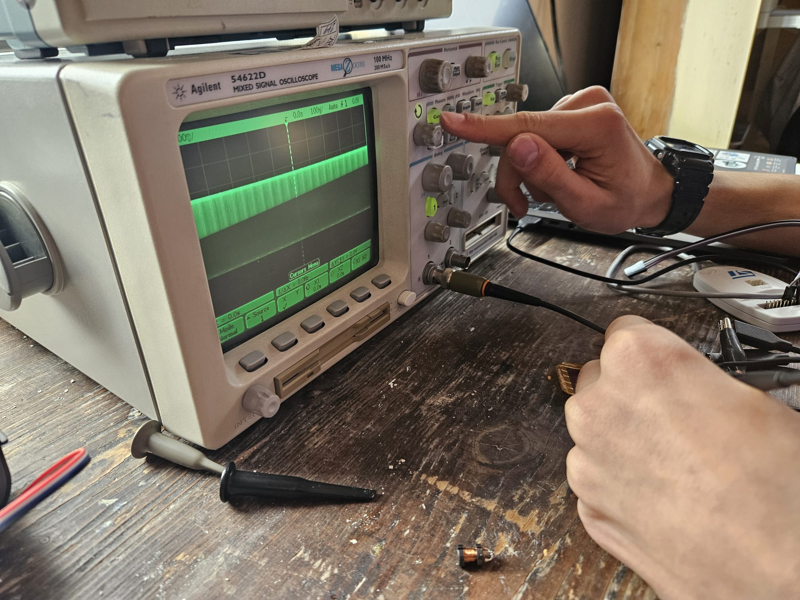
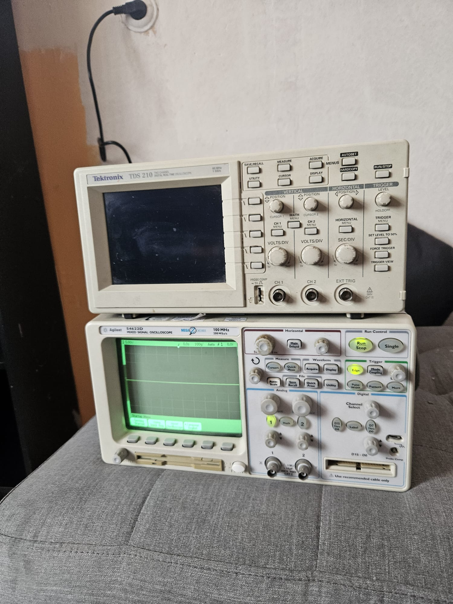
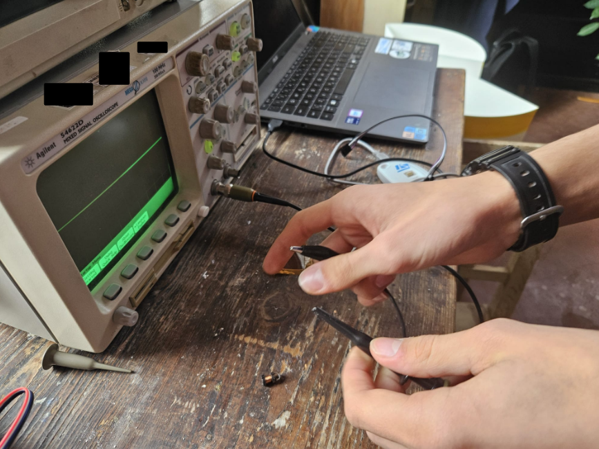
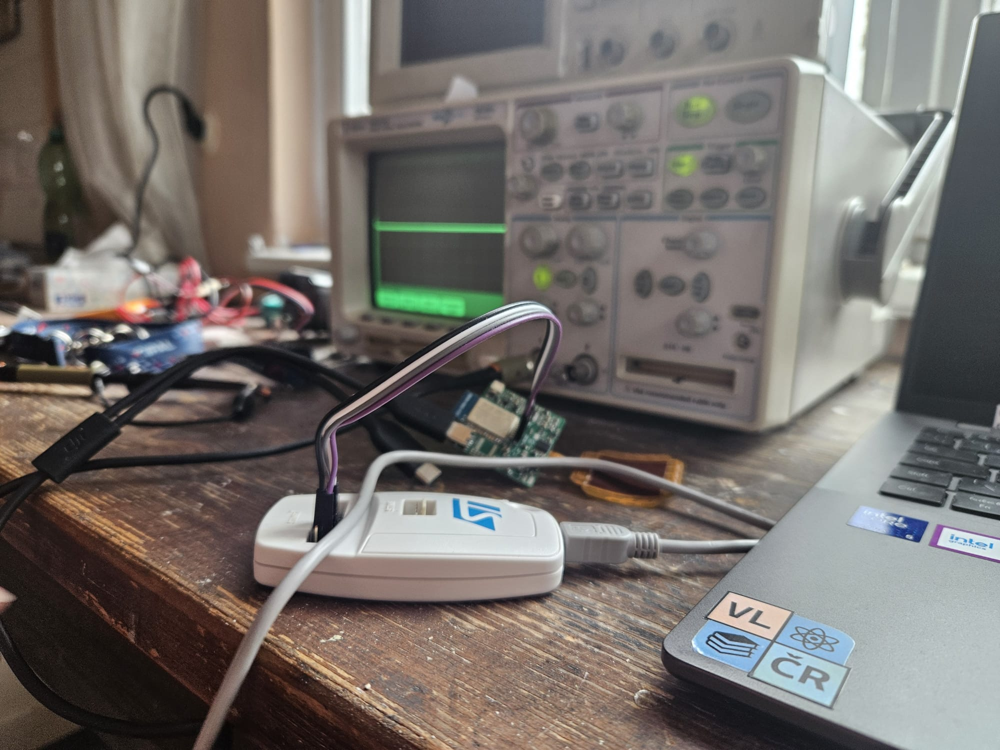
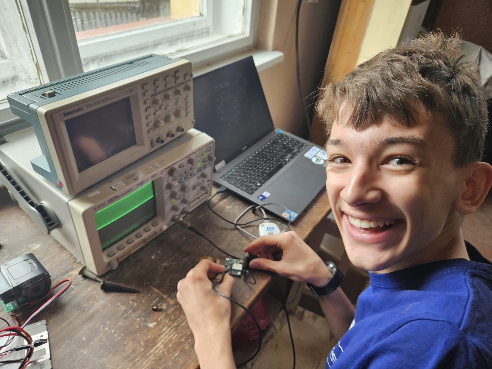
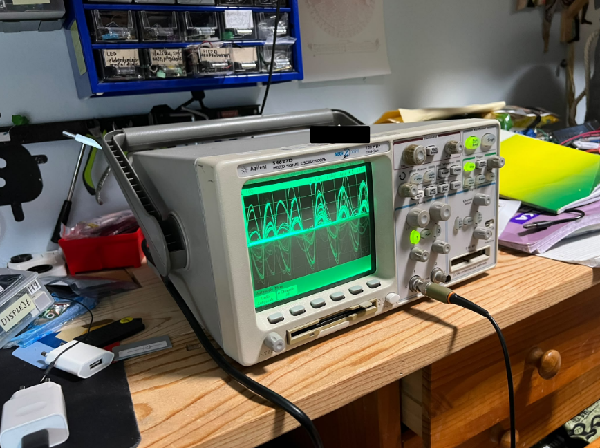

Nové měřicí vybavení od společnosti Jablotron
1. 11. 2026
Naše studentská iniciativa VLČR udělala další významný krok v rozvoji svého technického zázemí. Od české technologické společnosti Jablotron jsme získali dva špičkové osciloskopy, které zásadním způsobem posunou naše možnosti při vývoji a testování pokročilé elektroniky.
Do našeho vybavení nově přibyly dva profesionální stroje: dvoukanálový osciloskop Tektronix TDS 210 s integrovaným generátorem (60 MHz, 1 GS/s) a Agilent 54622D (100 MHz, 200 MSa/s), který navíc disponuje i smíšeným logickým analyzátorem. Obdržené přístroje okamžitě vyvolaly v týmu obrovskou vlnu nadšení. Zkoušení funkcí a testování prvních obvodů probíhalo hned v prvních minutách po vybalení z krabic.
Měřicí technika nebude sloužit pouze pro interní projekty VLČR, ale plánujeme ji sdílet s celou místní elektrotechnickou komunitou. Po letech spolehlivé služby v Jablotronu tak tyto stroje dostávají novou roli a pomohou desítkám dalších mladých nadšenců do elektroniky a robotiky.
„Ani nemůžeme vyjádřit, jak moc jsme za osciloskopy vděční. Překvapilo nás, že mají i generátor a logický analyzátor. Teď je u nás spousta elektrotechnické radosti, kdy si každý testuje, co může. Po dlouhé době fungování v Jablotronu teď budou mít možnost tyto stroje využít spousty místních nadšenců. Ještě jednou moc děkujeme za tyto skvělé přístroje,“ popisuje zakládající členové.
Jako vyjádření našeho díky jsme společnost Jablotron zařadili do sekce „Děkujeme, že vzděláváme“ na našem webu. Podobná podpora od renomovaných firem z oboru nám dokazuje, že naše snaha o popularizaci technického vzdělávání má smysl. Darované osciloskopy nám pomohou posunout kvalitu našich projektů zase o úroveň výš.
Společnosti Jablotron ještě jednou srdečně děkujeme a přejeme celé firmě i všem jejím zaměstnancům spoustu dalších úspěchů!





